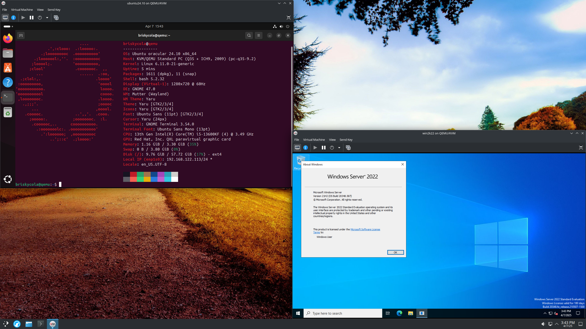
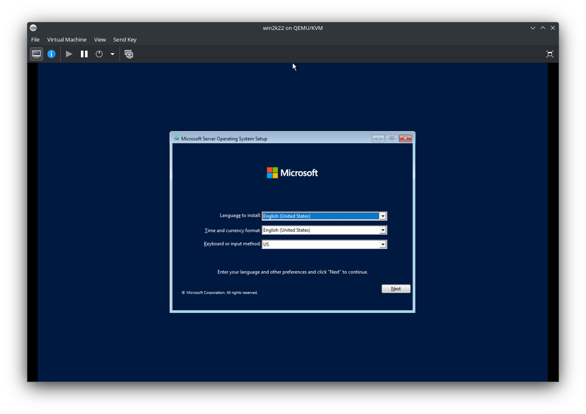
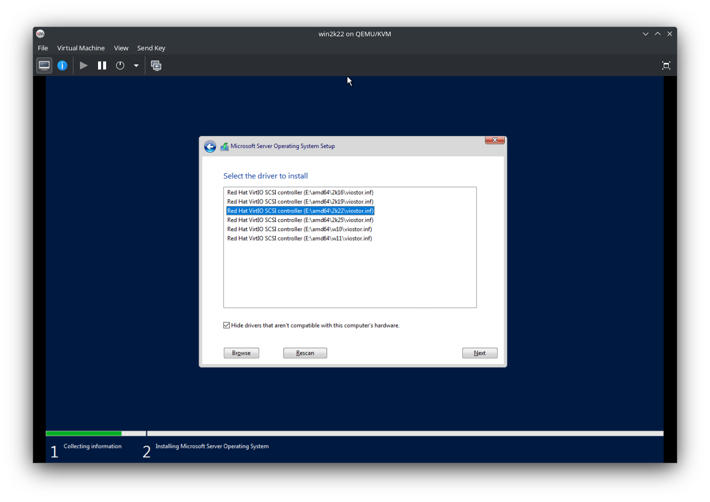
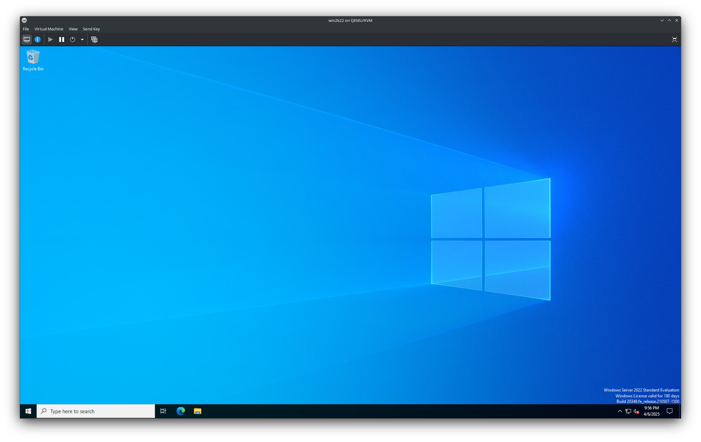

Introduction
Sometimes, we find ourselves needing to use a different operating system to accomplish a certain task. For example, you are using Linux and you need to run a program designed for Windows, and the program cannot run under a compatibility layer like WINE. Previously on Linux, for these kinds of scenarios, Virtualbox was used to create virtual machines to run these programs, and while Virtualbox is a great program, it’s quite slow in comparison to QEMU with KVM. In my experience, QEMU with KVM acceleration has given me the best performance compared to other software. This guide will show you in detail how to use QEMU along with Virt Manager to make virtual machines with near-native performance.
Prerequisites
You must have virtualization enabled in your BIOS. This is usually enabled by default but if you want to check, you can run the following command:
lscpu | grep VirtualizationIf you have an Intel CPU, it should say VT-x and on an AMD CPU, it should say AMD-V. If you don’t see anything. You will have to go into your BIOS and enable it yourself. If you have an Intel motherboard, you should enable VT-x and if you have an AMD motherboard, you should enable AMD-V. Consult your PC manufacturer or motherboard manual for further instructions.
Installation
It is time to install QEMU along with Virt Manager onto your system. Install the following packages using your distribution’s package manager.
Arch Linux
sudo pacman -S qemu virt-manager virt-viewer dnsmasq vde2 bridge-utils openbsd-netcat libguestfsDebian/Ubuntu
sudo apt install qemu-system virt-manager libvirt-daemon dnsmasq vde2 bridge-utils netcat-openbsd libguestfs-toolsFedora
sudo dnf install @virtualizationNon-systemd distributions
If you are using a distribution that does not use systemd, you must install the libvirt daemon package that corresponds to your init system. For example, on an Artix Linux system with OpenRC, you must install libvirt-openrc.
Modify configuration files
Before we start creating virtual machines, we need to make sure that the user has sufficient permissions to use KVM. To do this, we first need to uncomment the following lines in /etc/libvirt/libvirtd.conf
unix_sock_group = "libvirt"
unix_sock_ro_perms = "0777"
unix_sock_rw_perms = "0770"After making those changes, your user must be part of the libvirt group, run the following command to make the changes:
sudo usermod -aG libvirt $(whoami)If you are using a Debian/Ubuntu based distribution, you may need to add your user to the kvm group: run the following command to make the changes:
sudo usermod -aG kvm $(whoami)Now we must enable the libvirtd service itself. On most distributions, you can enable the service on startup using systemd:
sudo systemctl enable libvirtdIf you are using a distribution that does not use systemd, you must enable the service using your distribution’s init system.
At this point, you must restart your system for the changes to be applied.
Setting up the virtual machine
Open Virt Manager and wait for QEMU/KVM to connect. Before we begin creating a virtual machine, we first must make sure that the virtual network adapter is working. To check this, click on QEMU/KVM, then go to Edit -> Connection Details -> Virtual Networks and click the play button to enable the virtual network adapter. Also make sure to check On Boot to ensure that the adapter is always started.
Now we can begin the process of creating a virtual machine. Go to File -> New Virtual Machine. Make sure local install media is selected and click forward.
You will then be prompted to select an ISO image. Go to Browse -> Browse Local and locate your ISO image. Most of the time, it will automatically detect the OS. If it doesn’t, you will have to manually select the OS.
After that, you’ll be asked to allocate RAM and CPUs to the VM. The general rule for allocating RAM is to never go above 50% of your total RAM (Ex: if you have 16GB of RAM, you can allocate at most 8GB). Ignore the number of CPUs for now, we will configure that later.
The next step is to configure your storage. You can configure this however you want.
Now you will get a message to confirm the VM settings. We are not done with the configuration just yet. We are going to change some of the VM settings. Make sure to check Customize configuration before install and click Finish.
Customizing virtual machine settings
Changing firmware to UEFI
We will start with changing the firmware settings. I personally like to set the firmware to UEFI because every modern computer uses UEFI and many operating systems expect UEFI. This change is optional unless your guest OS requires UEFI.
Modifying CPU topology
The next setting we will change is the CPU. The reason we didn’t allocate CPU cores ahead of time is because for some reason, Virt Manager allocates sockets instead of cores and threads. In other words, the guest OS will think there are multiple physical CPUs. We will modify the topology to allocate cores and threads instead. Similar to allocating RAM, do not go above 50% of your total CPU threads. To view the total threads allocated, look at vCPU allocation
Changing disk interface
Next we will change the disk interface. The VirtIO interface is recommended as it is a paravirtualized interface, which makes it faster compared to using the emulated SATA interface.
Selecting graphics adapter
There are two options for the graphics adapter. You can use either Virtio or QXL. Virtio has 3D acceleration and QXL only has 2D acceleration. You can use the driver that works best with your use case.
Adding a second CD/DVD Drive (Windows Guests Only)
Windows does not come with VirtIO drivers. Because of this, we need to install the drivers manually during Windows setup. The virtio drivers for Windows can be found here. To add a second CD/DVD drive, go to Add Hardware -> Storage -> change device type to CDROM device -> click Manage and locate the VirtIO drivers.
Adding a TPM Module (Windows 11 Guests Only)
Windows 11 requires a TPM Module in order to be installed. Thankfully, you can emulate a TPM using swtpm. Use your distribution’s package manager to install swtpm. To add the TPM to the VM, go to Add Hardware -> TPM -> and use the default settings.
Installing the operating system
Now you can click Begin Installation and from here, install the OS as you would on a physical computer. I’m installing Windows Server 2022. 
Installing VirtIO drivers (Windows Guests Only)
Earlier I mentioned that we needed to add a second CD/DVD drive for the VirtIO drivers. You may have noticed that Windows didn’t detect the disk. This is where the second CD/DVD drive comes in. To install the drivers, go to Load Driver -> Ok and you will get a list of available drivers. Install the driver that cooresponds to your version of Windows. From here you can continue with the Windows install normally. 
Install graphics drivers (Windows Guests Only)
Once Windows is fully installed, we will need to install the graphics drivers. In File Explorer, go to the drive labeled as virtio-win-x.x.xxx and run virtio-win-guest-tools.exe
Conclusion
You have now successfully created a virtual machine using QEMU/Virt Manager. This VM will have near-native performance with very little emulation overhead. Here is a screenshot of the VM with all of the necessary drivers. 